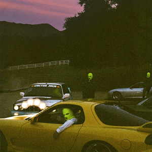

Huncho Jack, Jack Huncho
21/12/2017
Este álbum colaborativo entre Travis Scott y Quavo, miembro de Migos, fusiona sus estilos distintivos en un proyecto conjunto. Con ritmos pegajosos y producciones vibrantes, el álbum presenta colaboraciones sólidas como "Modern Slavery" y "Saint Laurent Mask". "Huncho Jack, Jack Huncho" ofrece una mezcla de trap melódico y letras extravagantes que reflejan la química creativa entre ambos artistas.

